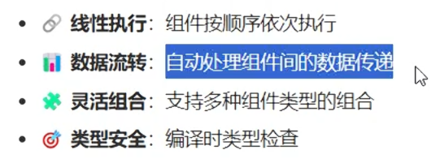

Eino Chain：串行、并行与分支
简介
Chain(链) 就是Eino 中用于组合多个组件的编排方式, 它将多个组件按照顺序实现链接, 前一个组件的输出作为后一个组件的输入, 实现一个处理流水线
Chain 的特点

Chain 的基本结构
基础示例 : 简单的 Chain
模板 + 模型的基础组合
省略一个简单的 template 模板 + 模型创建
- 创建 Chain: template -> chatModel: compose.NewChain[输入,输出]()
- chain := compose.NewChain[map[string]any , *schema.Message]()
- 添加模板 + 模型: chain.AppendChatTemplate(chatTemplate).AppendChatModel(chatModel)
- 编译一下 Chain: runnable,err := chain.Compile(ctx) if err != nil {log.Fatalf("编译失败:%v" , err)}
- 执行Chain:
input := map[string]any{" " : " " , " " : " "} 对应模板中的内容
output , err := runnable.Invoke(ctx,input)
if err != nil {log.Fatalf("执行失败:%w" , err)}
fmp("回答 : %s\n" , output.Content)
Lambda 组件
Lambda 是 Chain 中的自定义处理节点 , 可以插入任意逻辑
基础的Lambda 使用
- 创建Chain: compose.NewChain[]()
- 添加前缀
chain.AppendLambda(compose.InvokableLambda(func(ctx context.Context ,input string)(string ,error) {处理逻辑})).
AppendLambda(compose.InvokableLambda(func(ctx context.Context,input string)(string, error){处理逻辑}))
runnable ,err := chain.Compile(ctx)
if err != nil { log.Fatalf("编译失败:%v" ,err) }
output , err := runnable.Invoke(ctx , "hello , 凯伦")
if err != nil { log.Fatalf("执行失败:%v" ,err) }
构建处理链
- 创建 context , chatModel ;
string
↓ 清洗文本
string
↓ 组装模板变量
map[string]any
↓ ChatTemplate
[]*schema.Message
↓ ChatModel
*schema.Message
↓ 取出 Content
string
chain := compose.NewChain[string, string]()
chain.AppendLambda(compose.InvokableLambda(
func(ctx context.Context, rawText string) (string, error) {
cleaned := strings.TrimSpace(rawText)
fmt.Println(cleaned)
return cleaned, nil
},
)).AppendLambda(compose.InvokableLambda(
func(ctx context.Context, rawText string) (map[string]any, error) {
return map[string]any{
"girlfriend": "sunyuhan",
"boyfriend": rawText,
}, nil
},
)).AppendGraph(func() *compose.Chain[map[string]any, *schema.Message] {
newChain := compose.NewChain[map[string]any, *schema.Message]()
template := prompt.FromMessages(
schema.FString,
schema.SystemMessage("{girlfriend}"),
schema.UserMessage("{boyfriend}"),
)
newChain.AppendChatTemplate(template).
AppendChatModel(chatModel)
return newChain
}()).AppendLambda(compose.InvokableLambda(
func(ctx context.Context, msg *schema.Message) (string, error) {
return msg.Content, nil
},
))
runnable, err := chain.Compile(ctx)
if err != nil {
log.Fatal(err)
}
result, err := runnable.Invoke(ctx, "zhaojiaqi")
if err != nil {
log.Fatalf("执行失败：%v", err)
}
fmt.Printf("最终的分析结果：%s\n", result)
Parallel 并行执行
并行执行多个独立的任务,然后合并结果
// 创建并行节点
parallel := compose.NewParallel()
// 任务1：提取关键词
- "keyword": 任务 ID；完成后结果通过 results["keywords"] 获取。
parallel.AddLambda("keywords", compose.InvokableLambda(
func(ctx context.Context, input map[string]any) (string, error) {
fmt.Println("并行任务1：提取关键词")
template := prompt.FromMessages(
schema.FString,
schema.SystemMessage("请提取文本中的关键词，用逗号分隔。"),
schema.UserMessage("{text}"),
)
messages, _ := template.Format(ctx, input)
response, err := chatModel.Generate(ctx, messages)
if err != nil {
return "", err
}
return response.Content , nil
},
))
// 任务2：情感分析
parallel.AddLambda("sentiment", compose.InvokableLambda(
func(ctx context.Context, input map[string]any) (string, error) {
fmt.Println("并行任务2：情感分析")
template := prompt.FromMessages(
schema.FString,
schema.SystemMessage("请分析文本的情感倾向（正面/负面/中性）。"),
schema.UserMessage("{text}"),
)
messages, _ := template.Format(ctx, input)
response, err := chatModel.Generate(ctx, messages)
if err != nil {
return "", err
}
return response.Content, nil
},
))
//任务3:摘要生成
parallel.AddLambda("summary", compose.InvokableLambda(
func(ctx context.Context, input map[string]any) (string, error) {
fmt.Println("并行任务3：生成摘要")
template := prompt.FromMessages(
schema.FString,
schema.SystemMessage("请用一句话总结文本内容。"),
schema.UserMessage("{text}"),
)
messages, _ := template.Format(ctx, input)
response, err := chatModel.Generate(ctx, messages)
if err != nil {
return "", err
}
return response.Content, nil
},
))
// 创建主 Chain
chain := compose.NewChain[string, map[string]any]()
chain.
// 准备输入
AppendLambda(compose.InvokableLambda(func(ctx context.Context, text string) (map[string]any, error) {
return map[string]any{"text": text}, nil
})).
// 并行执行三个任务
AppendParallel(parallel).
// 处理并行结果
AppendLambda(compose.InvokableLambda(func(ctx context.Context, results map[string]any) (map[string]any, error) {
fmt.Println("\n=== 所有任务完成 ===")
return results, nil
}))
runnable, err := chain.Compile(ctx)
if err != nil {
log.Fatalf("编译失败: %v", err)
}
text := "Eino 是一个优秀的 AI 开发框架，它让开发者能够轻松构建智能应用。框架设计精良，文档完善，社区活跃。"
results, err := runnable.Invoke(ctx, text)
if err != nil {
log.Fatalf("执行失败: %v", err)
}
fmt.Printf("\n关键词: %s\n", results["keywords"])
fmt.Printf("情感: %s\n", results["sentiment"])
fmt.Printf("摘要: %s\n", results["summary"])
Branch 条件分支
根据条件选择不同的执行分支
ctx := context.Background()
// 1. 定义分支选择规则
branchCondition := func(ctx context.Context, input map[string]any) (string, error) {
language, ok := input["language"].(string)
if !ok {
return "", fmt.Errorf("language 必须是 string")
}
language = strings.ToLower(strings.TrimSpace(language))
fmt.Printf("检测到语言: %s\n", language)
switch language {
case "go", "golang":
return "go_branch", nil
case "python":
return "python_branch", nil
default:
return "other_branch", nil
}
}
// 2. 定义各个分支的处理逻辑
goBranch := compose.InvokableLambda(
func(ctx context.Context, input map[string]any) (map[string]any, error) {
fmt.Println("→ 执行 Go 分支")
input["advice"] = "推荐使用 Eino 框架进行 AI 开发"
input["features"] = []string{"高性能", "并发支持", "类型安全"}
return input, nil
},
)
pythonBranch := compose.InvokableLambda(
func(ctx context.Context, input map[string]any) (map[string]any, error) {
fmt.Println("→ 执行 Python 分支")
input["advice"] = "推荐使用 LangChain 框架进行 AI 开发"
input["features"] = []string{"生态丰富", "易上手", "社区活跃"}
return input, nil
},
)
otherBranch := compose.InvokableLambda(
func(ctx context.Context, input map[string]any) (map[string]any, error) {
fmt.Println("→ 执行其他语言分支")
input["advice"] = "建议参考该语言的 AI 开发库"
input["features"] = []string{"待探索"}
return input, nil
},
)
// 3. 创建主链：输入 map，输出 map
chain := compose.NewChain[map[string]any, map[string]any]()
chain.
AppendLambda(compose.InvokableLambda(
func(ctx context.Context, input map[string]any) (map[string]any, error) {
fmt.Println("=== 开始处理 ===")
return input, nil
},
)).
AppendBranch(
compose.NewChainBranch(branchCondition).
AddLambda("go_branch", goBranch).
AddLambda("python_branch", pythonBranch).
AddLambda("other_branch", otherBranch),
).
AppendLambda(compose.InvokableLambda(
func(ctx context.Context, input map[string]any) (map[string]any, error) {
fmt.Println("=== 处理完成 ===")
return input, nil
},
))
runnable, err := chain.Compile(ctx)
if err != nil {
log.Fatalf("编译失败: %v", err)
}
// 4. 运行测试
testCases := []map[string]any{
{"language": "Go", "task": "开发 AI 应用"},
{"language": "Python", "task": "机器学习"},
{"language": "Java", "task": "企业应用"},
}
for _, input := range testCases {
result, err := runnable.Invoke(ctx, input)
if err != nil {
log.Printf("执行失败: %v", err)
continue
}
fmt.Printf("语言：%s\n", result["language"])
fmt.Printf("建议：%s\n", result["advice"])
fmt.Printf("特性：%v\n\n", result["features"])
}
链式编排-实现文章流水线
type ArticleRequest struct {
Topic string
Keywords []string
Length int // 目标字数
}
func main(){
-创建 ctx + chatModel ;
chain := compose.NewChain[ArticleRequest , string]()
chain.
AppendLambda(compose.InvokableLambda(func(ctx context.Context , req ArticleRequest)(string , error){
fmt.Println("=== 步骤1：生成文章大纲 ===")
template := prompt.FromMessages(
schema.FString,
schema.SystemMessage("你是一个专业的内容策划师。请根据主题和关键词生成文章大纲。"),
schema.UserMessage("主题: {topic}\n关键词: {keywords}\n\n请生成一个3-5点的文章大纲。"),
)
message,_ := template.Format(ctx,map[string]any{
"topic" : req.Topic ,
"keywords":fmt.Sprintf("%v" ,req.Keywords) ,
})
response,err := chatModel.Generate(ctx , message)
if err != nil {
return "" , nil
}
fmt.Printf("大纲:%s" , response.Content)
return response.Contenr , nil
})).
// 步骤2：扩写内容
AppendLambda(compose.InvokeableLambda(func(ctx context.Context, outline string)(string, error) {
fmt.Println("=== 步骤2：扩写文章内容 ====")
template := prompt.FromMessages(
schema.FString,
schema.SystemMessage("你是一个专业的内容作者。请根据大纲扩写成完整文章，要求内容充实、逻辑清晰。"),
schema.UserMessage("大纲:\\n{outline}\\n\\n请扩写成一篇80字左右的文章。"),
)
message,_:= template.Format(ctx , map[string]any{
"outline" : outline ,
})
reponse,err := chatModel.Generate(ctx,message)
if err != nil {
return "",err
}
fmt.Printf("初稿完成,字数为 %d\n",len(reponse.Content))
return response.Content , nil
})).
// 步骤3：润色优化
AppendLambda(compose.InvokeableLambda(func(ctx context.Context, draft string)(string, error) {
fmt.Println("=== 步骤3：润色优化 ===")
template := prompt.FromMessages(
schema.FString,
schema.SystemMessage("你是一个专业的编辑。请优化文章的语言表达，使其更加流畅、生动。"),
schema.UserMessage("文章：\n{draft}\n\n请进行润色优化。"),
)
messages, _ := template.Format(ctx, map[string]any{
"draft": draft,
})
response, err := chatModel.Generate(ctx, messages)
if err != nil {
return "", err
}
fmt.Println("润色完成\n")
return response.Content, nil
})).
// 步骤4：格式化输出
AppendLambda(compose.InvokableLambda(func(ctx context.Context, article string) (string, error) {
fmt.Println("=== 步骤4：格式化输出 ===")
// 添加 Markdown 格式
formatted := fmt.Sprintf("# 生成的文章\\n\\n%s\\n\\n---\\n*由 Eino AI 助手生成*", article)
return formatted, nil
})
runnable , err := chain.Compile(ctx)
if err != nil {
log.Fatalf("编译失败 : %w" , err)
}
//生成文章
request := ArticleRequest{
Topic:"Ai在软件开发中的应用" ,
Keyword :[]string{"AI","编程","效率","未来"} ,
Length : 800 ,
}
result , err := runnable.Invoke(ctx ,request)
if err != nil {
log.Fatalf("执行失败:%v" ,err)
}
fmt.Println("\n" + "=" * 50)
fmt.Println(result)
fmt.Println("=" * 50)
- 保存数据到文件
os.WriteFile("generated_article.md",[]byte(result),0644)
fmt.Println("\n该文章已保存到 generated_article.md")
}